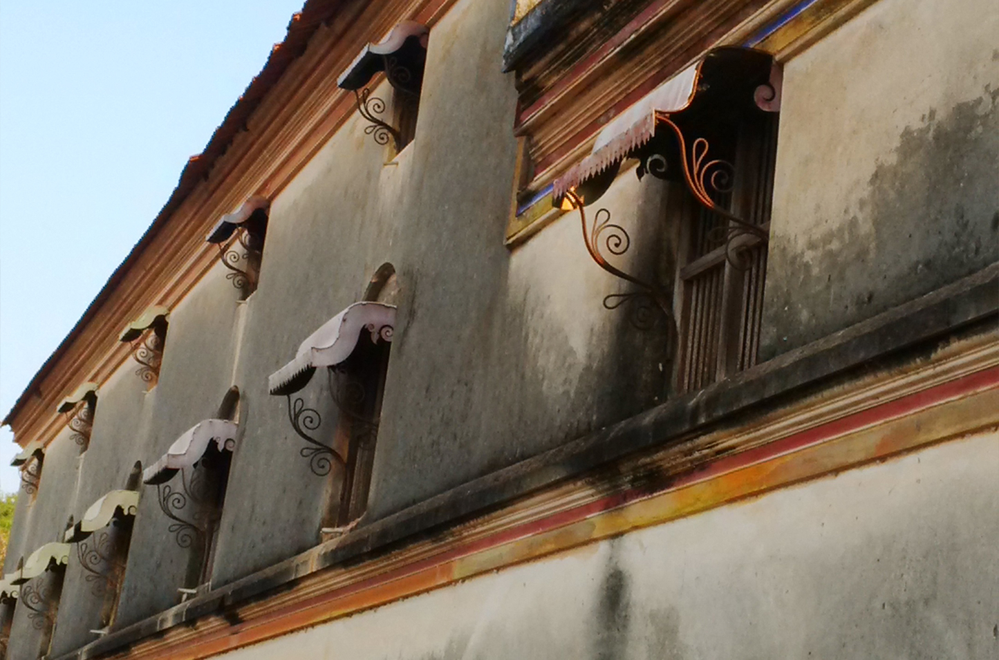
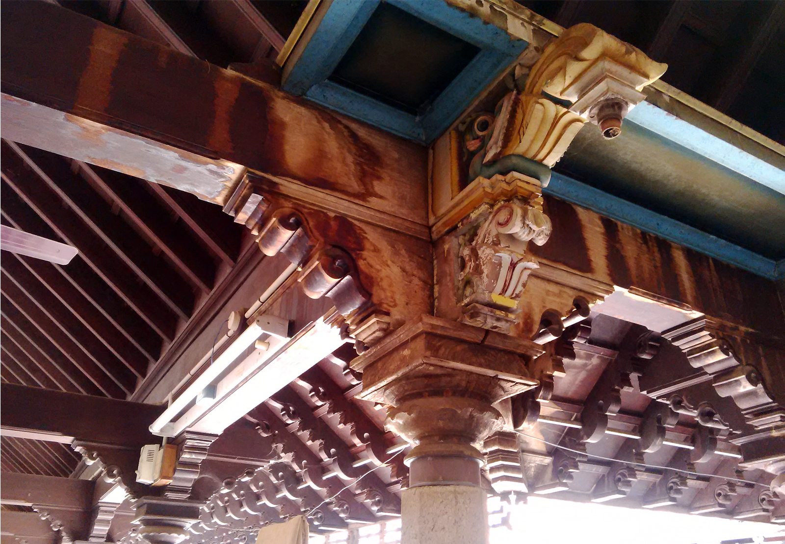
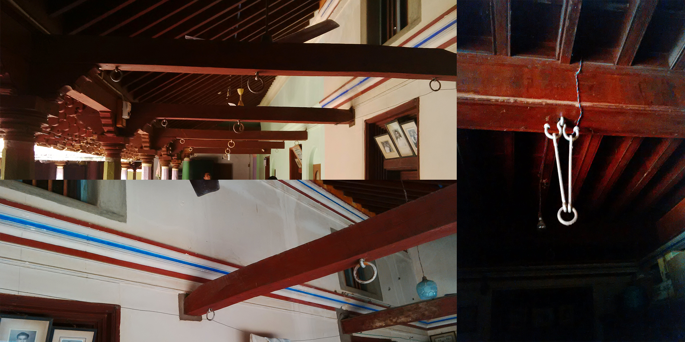
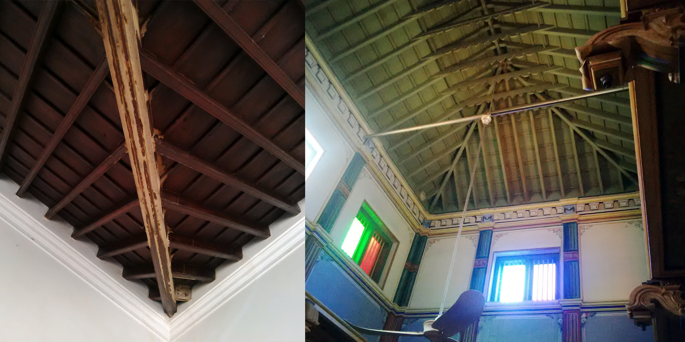
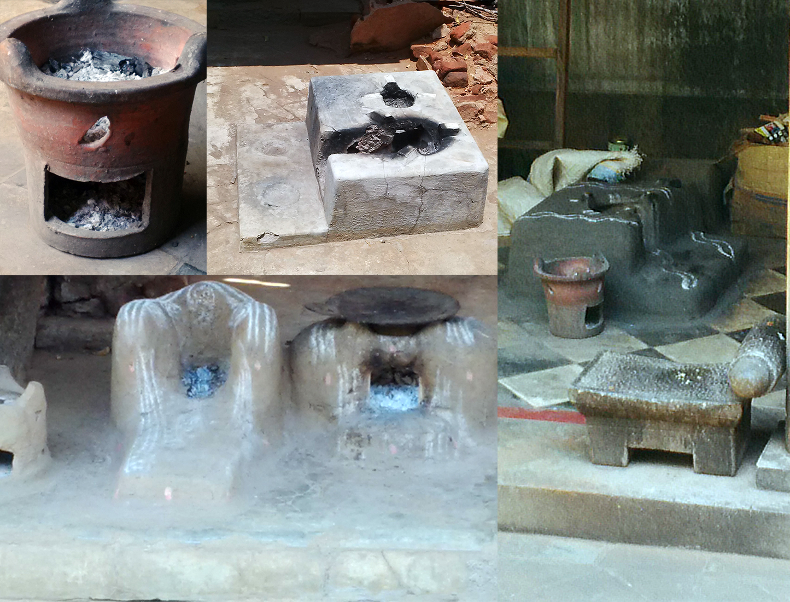

We often run a Google search on the top industrial honchos to learn from their words of wisdom to understand nuances of user experience and hidden facts of usability. However, we seem to have lost touch with our own rich intellectual heritage. Our handpicked choice was to research "chettinad houses" and "chettiyars" at karaikudi –heritage town of tamilnadu. According to chettiyars, their well-versed architecture and skillset define the way they solved some of identified problems enhancing better experience, which we just need to inculcate as such based on the needs of modern times. It throws light on the fact that every human behaviour is pertaining to a cultural heritage value embeded in his/her society (identified groups/ community) he/she belongs to. So why not go back to roots and learn from archaeological sites that are truly eternal? This thought initiated the need to start this socio-cultural study.
A study about palatial houses that still stand strong –a evidence to chettiyars (inhabitants of karaikudi) unique style of architecture, as they built and implemented strategies for a better livelihood experience.

My role was to cover some great anecdotes, unpredictable cultural insights and shed some light on the most fascinating architecture along the way.
Our great epics (religious or not), surely have classified human inherent tendency that stand true to the modern times, even more beneficial to us ever before. I am sure many of us must have found it hard to explore or understand some great treasures hidden in ancient scripture, sculptures and artifacts.
Our goal in speaking with "chettiyars" and embarking on this project was not to publish a architecture study, but rather to collect stories and share how this generation still benefits through the conceptual architecture of their ancestors.
To start with, every house has a story and every story spins for generations together all around one single house. In those times, their ancestors constructed house periodically regulating the cash flow through business transactions, sailng across oceans. So they always start with the back portion of the land and as it goes the house will be completed part by part. The interesting fact is that the methodology of architecture and house furnishing varies with the influence and exposure to unique findings in different parts of the world during their business conducts.
Every part of concrete limestone structure and household things right from closet to kitchen, backyard to bedroom would emphase mainly on the experience and cultural values they wanted to abide in their livelihood strategy.
Every member of the family are legal heirs to the house and everybody possess equal share and right. For them it is the symbol of status and pride to safeguard their heritage.
The focus of our qualitative research was on finding commonalities among chettiyars who are strongly identified with an introverted mental model of lifestyle. We felt strongly about encouraging others to celebrate and appreciate their qualities.
What to do introverts like them, have done well that makes them natural-born UX people, and what we can learn about their architecture talents in order to bring about those findings in designing better products for all of us?

Chettiyars tend to take time to fine-tune their house structure based on their need at times of segmential constructions. Additionally, they think ahead about possible norms that others might have about having better amenities in future, instead of winging it and risking something they might regret later.

Creativity was at its maximum in every form of the architecture. They had a very close knitted family who tend to stage all family function within their house and all the rooms are in-built to hold as many groceries, household things inside shelves and roof racks.
Daily requirements are always kept in reach while items required for function or any family occasion are stored in a separate backyard rooms as well as terrace store provision with enough natural light and proper ventillation.
Amusing experience methodology, foreseen design architect which constantly astounds our research. They still follow the customs of their ancestors and conduct wedding at home.
Consumers are going to do their best to seek the best possible deal while shopping
Ease inhabitance for generations as much as possible by making it simple for family to enhance structure into the flow of their lives.
Extended both cultural value and usability innovation in a more fascinating way.

The most efficient way to improve experience and design is to observe users –social, cultural-bred people, to be sensed with empathy! Rather just be a hand-picked specimen to test the design functionality.